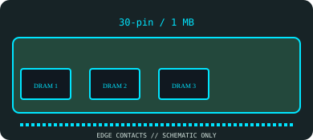

[ MEMORY // IDENTIFIED VINTAGE MODULE ]
Samsung KMM591000AN-7
Samsung’s specifically labeled 1 MB, 70 ns 30-pin parity assembly, built from two x4 data devices and a separate x1 parity device. This is a model-specific record, not a generic SIMM-family listing.

Exact module specifications
| Manufacturer / exact part number | Samsung KMM591000AN-7 |
|---|---|
| Capacity | 1 MB (1M × 9 bits; eight data bits plus one parity bit) |
| Generation / contact count | 30-pin SIMM, 30-pin single-inline-contact vintage generation |
| Memory mode and parity | Fast Page Mode (FPM) DRAM; 9-bit parity organization; not ECC |
| Speed / access time | 70 ns row access (tRAC), speed grade -7 |
| Operating voltage | 5 V nominal (module-family datasheet specifies a single +5 V supply; ±10% where stated). |
| Chip organization | Two KM44C1000AJ-7 ×4 DRAMs plus one KM44C1000CJ-7 ×1 parity DRAM; three-chip assembly |
Host compatibility & handling
Use only in a 30-pin SIMM socketed host that supports 1 MB density and parity; 386/486 systems with 8-bit SIMM banks often require four modules per 32-bit bank, while 16-bit hosts generally use paired modules. Confirm the board manual and parity configuration.
- 72-pin SIMMs have 32-bit data or 36-bit data-plus-parity organization; 30-pin SIMMs expose 8 or 9 bits. 30-pin and 72-pin modules are not interchangeable.
- Confirm the system’s documented voltage, supported memory density, parity policy, bank-width/population order, and access timing before installation; matching notches do not guarantee support.
- Handle by board edges, protect from ESD, and document the complete module/chip markings and the host used for testing.
Model-specific identification notes
Samsung’s specifically labeled 1 MB, 70 ns 30-pin parity assembly, built from two x4 data devices and a separate x1 parity device. The module organization and exact SKU should be checked against the cited data-sheet/archive records and the physical label; speed suffixes are not interchangeable.
Sources & further reading
- DeviceLog — Samsung 1 MB 30-pin DRAM SIMM: KMM591000AN-7 composition and label evidenceModel-specific module identification and chip-composition photographs; use the primary chip datasheet for electrical limits.
- Samsung KM44C1000A DRAM datasheet archivePrimary memory-device timing and electrical reference for the 70 ns x4 devices used in this assembly.
- Internet Archive — SIMM & DIMM Mac memory stack (historical module/host reference)Independent archival source for vintage module generation and context. Compatibility is host-specific and must be checked in the machine's service manual.
Archive references establish the vintage form-factor context; the module data sheet and host service manual govern electrical/timing compatibility.